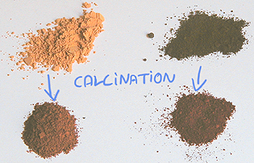

Très présent dans la nature, le fer, en association avec l'oxygène
et quelques autres atomes, colore les argiles, les marbres et de
nombreux autres minéraux. Le fer à l'état pur est rare sur terre
à l'état naturel étant donné qu'en deçà de sa température de fusion -
1535°C - il s'associe toujours à d'autres éléments. Cette très
forte température n'est pas atteinte lors de la cuisson des argiles ferreuses
(maximum de l'ordre de 1200°C).
La densité du fer est de 7,88. Voir aussi table
de Mendeleiev.
Variation par calcination

La calcination des oxydes jaunes donne les oxydes rouges. L'opération, très
simple, peut être réalisée en dix à vingt minutes à l'aide d'une casserole et
d'un réchaud de n'importe quel type, à feu modéré, en remuant bien le pigment à
l'aide d'une cuiller en bois. C'est sans danger. Ce procédé est très bien connu
: il date du paléolithique moyen.
L'oxyde de fer brun peut également être calciné, ce qui démontre qu'il
contient également de l'eau. Il donne alors une sorte de rouge plus intense que l'ocre rouge. La terre
d'ombre et la terre de Sienne, qui sont
mêlées de manganèse peuvent aussi être
brûlées.
La photo ci-dessus montre dans la moitié gauche
une ocre jaune calcinée donnant une variété rouge, à base Fe2O3,
au-dessous du
même pigment non calciné. A droite, un oxyde de fer brun (en
haut) et le même oxyde de fer brun calciné (un peu rougeâtre, en bas).
L'image ci-dessous montre, sur une palette, ces mêmes pigments agglutinés dans l'huile de lin. La
répartition des pigments (haut, bas, gauche, droite) est la même. En bas à
droite, l'oxyde de fer brun calciné correspond au "violet"
de mars.
Sur l'image ci-dessous, on simplement
broyé les mêmes pigments avec de l'huile et donné quelques coups de spatule
afin de montrer l'étonnante gamme de couleurs obtenue. On remarque que lorsque
le pigment brun est calciné, le "violet" obtenu est plus clair.

Ce type d'expériences permet de constater à quel point il est facile de
transformer une Sienne naturelle en Sienne brûlée, une ocre jaune en ocre
rouge, une ombre naturelle en ombre brûlée (voir photo
ci-dessous), etc. Ces opérations ont vraisemblablement
été pratiquées dès l'aube de
l'humanité car elles ne nécessitent pas une température de cuisson très
élevée. Elles constitueraient même selon certains la première opération de
transformation chimique effectuée par l'être humain.
Chimiquement parlant, il y a changement du type d'oxydation lors de la
calcination. Par l'action
de la chaleur, la molécule d'oxyde ferrique (de valence
3) perd une molécule H2O et se combine autrement car comme on l'a
dit, à l'état
naturel, le fer préfère toujours vivre en association.

La synthèse d'oxydes de fer bruns ou noirs
à partir d'autres variétés d'oxydes de fer nécessite des procédés que nous
ne connaissons pas (toute
information à ce sujet est bienvenue).
Les terres de Mars
Au Royaume Uni, en Cornouaille, la "terre de roche", minerai de
fer, a été
exploitée et transformée de toutes les manières possibles au XIXème
siècle. Les "terres de Mars" d'aujourd'hui sont produites substantiellement
de la même manière (voir photo d'un jaune de Mars
ci-dessous). De toutes manières, ces procédés ne sont, globalement, que la
synthèse ou le rassemblement de pratiques millénaires - ce qui n'enlève rien au
mérite des ingénieurs modernes.
Ce serait en tout cas à partir de cette époque que l'appellation "martienne"
des oxydes de fer se serait répandue, surtout dans le monde anglo-saxon. Il
n'est pas exceptionnel qu'un fabricant américain d'acrylique fine
(gamme de couleurs restreinte) fasse une impasse sur l'ocre rouge, lui préférant un rouge
de Mars.
Les terres de Mars, soit donc les oxydes de fer, sont bien plus colorants
que les ocres. Afin de les rendre utilisables, les fabricants de tubes recourent
à des charges incolores comme l'alumine.
Variétés courantes :
* jaune
* orangé (mélange d'oxyde jaune et d'oxyde rouge)
* rouge
Lecture conseillée :
Le
rouge de mars sur Pourpre.com
* "violet"
* brun (peu courant)
* noir (très courant)
Utilisation
des pigments
"de Mars"

Comme nous venons de le dire, les oxydes de fer sont extrêmement colorants.
On constate sur la photo ci-contre à quel point l'oxyde de fer jaune est
intense, solaire, profondément plus "irradiant" que l'ocre. Les
autres couleurs "de Mars" sont similaires à ce point de vue.
Pour travailler avec eux sous forme de pigments, il faut faire extrêmement
attention aux quantités sous peine de saturer totalement la palette et le
tableau. Il n'est pas rare qu'un peintre même précautionneux gâche un tableau
à cause de ces couleurs !
Quelques conseils, donc :
* il vaut vraiment mieux utiliser le pigment pur, non en mélange. Un
mélange gagne en l'occurrence à être réalisé par superposition de couches
de glacis
très légers
* comme le font les fabricants, vous pouvez ajouter de petites
quantités de charges incolores
en veillant à ne pas fragiliser la pâte, surtout si le liant est oléagineux
* pour tirer profit de l'extraordinaire caractère colorant des oxydes
de fer, n'hésitez pas à utiliser des quantités massives de médium.
C'est une autre raison de travailler en glacis
* si vous souhaitez mélanger l'oxyde en pâte couvrante et non en glacis, utilisez de
toutes petites quantités.
L'hématite
C'est le minerai de fer banal, ce qui ne l'empêche pas d'être parfois
splendide. Il est rouge, violacé ou noir (magnétite)
et recèle souvent des inclusions de limonite.
Ce sont les anciens Grecs qui lui donnèrent un nom évoquant le sang.
L'être humain s'en est servi tel quel depuis la préhistoire, sous forme de
blocs ou de poudre (roche broyée dès le paléolithique).
Géologiquement parlant, sa formation est associée à la présence d'eau, ce qui
explique que certaines sondes spatiales atterrissent sur Mars en des régions où
ce minerai est abondant, afin d'y détecter les vestiges d'une vie marine passée.
Lire l'article
du glossaire.
Lire
absolument l'article consacré à la sanguine
Retour
début de page